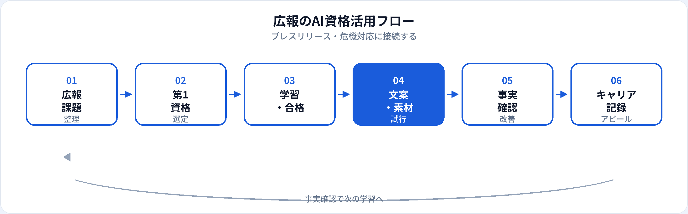

コーポレート広報・PR・IR広報・社内広報など、広報職は「正確な情報発信」と「信頼維持」が生命線です。生成AIは、プレスリリースのたたき台、メディア向けQ&A、危機対応文案の骨子づくりを効率化できます。一方、誤った数値や未確認の事実、不適切な画像利用は、企業信用を大きく損ないます。本記事では、広報・PRが取るべきAI資格を比較し、業務別の活用からキャリアまで2026年6月時点で整理します。マーケ職向け・非エンジニア向けの記事も併せて参照してください。
広報にAI資格が効く理由
広報の成果は「出稿数」だけでなく、情報の正確性と危機時の初動でも評価されます。資格学習は、生成AIを下書きツールとして使いつつ、事実確認・法務承認・最終責任は人間が担う——という型を、社内外に説明するための共通言語になります。
リリース制作の効率化
見出し案・リード文・構成案を速く作り、取材対応・関係者調整に時間を割ける。
リスク知識の体系化
著作権・肖像権・ディープフェイク・誤情報対応は広報の必須教養。生成AIパスポート第4章が実務と直結する。
AI関連発表の説明力
自社のAIサービス・AI活用事例を発表する際、技術の限界と倫理を理解した広報担当が、メディア対応をリードしやすい。
試験対策はこちら
広報の種類と資格の効き方
| 広報の種類 | AI資格の主な役割 | 第1候補の目安 |
|---|---|---|
| コーポレート広報 | プレスリリース、メディアキット、社長メッセージ骨子 | 生成AIパスポート（事実確認を徹底） |
| IR広報 | 決算説明文案、FAQ、投資家向け資料の構成案 | 生成AIパスポート（数値・開示は厳格管理） |
| 商品・サービスPR | ローンチリリース、メディア向け説明、取材想定Q&A | 生成AIパスポート |
| 危機・レピュテーション管理 | 声明文案、想定質問、社内共有文 | 生成AIパスポート（最終判断は経営・法務） |
| 社内広報・CSR | 社内報骨子、サステナレポート文案、イベント告知 | 生成AIパスポート |
業務別：生成AIの活用シーン
| 業務 | 生成AIの使い方（例） | 資格で学ぶ関連知識 |
|---|---|---|
| プレスリリース | 見出し案、リード文、5W1H構成のたたき台 | ハルシネーション対策、Human-in-the-Loop |
| メディア向けQ&A | 想定質問リスト、回答骨子、トーン調整 | 未公開情報の入力禁止 |
| 危機対応・声明 | 初動声明の構成案、社内共有メモの整理 | 経営・法務承認必須 |
| 取材・記者会見準備 | キーメッセージ整理、想定質問と回答案 | 事実と推測の区別 |
| 画像・動画素材 | キャプション案、altテキスト、利用条件の確認リスト | 著作権・肖像権・AI生成素材の商用条件 |
| 誤情報・ディープフェイク対応 | 社内説明文、注意喚起文案、確認手順の整理 | ディープフェイク、情報リテラシー |
おすすめ資格の比較
| 資格 | 広報との相性 | 学習時間目安 | 向いている広報 |
|---|---|---|---|
| 生成AIパスポート | ◎ 文案・リスク・事実確認に直結 | 20〜40時間 | コーポレート広報、商品PR、危機対応全般 |
| G検定 | ○ AI関連コーポレート発表 | 80〜150時間 | AI企業の広報、技術発表の説明役 |
| ITパスポート | △ セキュリティ・情報発信の土台 | 40〜80時間 | IT/SaaS企業の広報、情シス連携が多い場合 |
第1候補と学習順
-
第1：生成AIパスポート
プレスリリース・Q&A・危機文案のたたき台と、著作権・ディープフェイク等のリスク知識。合格後、次回リリース1本の構成案から試す。
-
第2（任意）：G検定
AIプロダクト・研究発表を深く説明するコーポレート広報、AI企業のPR担当向け。
-
第2〜3（任意）：ITパスポート
セキュリティインシデント広報、IT/SaaS企業で用語整理が必要な場合。
| あなたの広報業務 | 第1候補 |
|---|---|
| プレスリリース・メディア対応が中心 | 生成AIパスポート |
| IR・決算説明が中心 | 生成AIパスポート（構成案のみ・数値は厳格管理） |
| 危機・レピュテーション管理 | 生成AIパスポート（経営・法務承認必須） |
| AI企業の技術発表 | 生成AIパスポート → G検定 |
広報の活用フロー

広報では下書き→事実確認→法務・経営承認→公開→メディア対応の流れを崩しません。AIは下書きまでを速くし、正確性・開示責任・危機判断は人間が担います。
合格後の実践（リリース・危機・メディア）
プレスリリーステンプレート
「5W1H・リード・本文・引用・問合せ先」の固定プロンプト。数値・固有名詞は原資料から人が転記。
取材想定Q&A
キーメッセージ3点から想定質問10個を生成。回答は広報・経営が確定し、未公開情報は含めない。
危機対応チェックリスト
声明文案のたたき台生成前に「事実確認・法務・承認者・公開チャネル」を1枚化。AIは骨子支援まで。
広報の評価はメディア露出・信頼・危機対応の初動です。AIで短縮した時間を、関係者調整とファクトチェックの精度向上に再投資してください。
広報現場の注意点
| やってよいこと | 避けるべきこと |
|---|---|
| 公開済み情報に基づく構成案 | 未公開のM&A・人事・決算数値の入力 |
| トーン指定付きの文案たたき台 | AI出力を承認なしでリリース |
| 想定Q&Aのブレスト | 根拠不明の数値・引用をそのまま掲載 |
| 画像利用条件の確認リスト作成 | 著作権・肖像権を無視したAI生成素材の利用 |
上場企業では、AI利用そのものが開示・ガバナンスの論点になり得ます。法務・IR・経営と事前にすり合わせてください（学習ガイド）。
キャリア・転職でのアピール
現職（広報のまま）
「生成AIパスポート（年月）」と、リリース制作リードタイム短縮「危機対応マニュアル整備」「AI生成素材ガイドライン策定」などをセットで記載。社内AI利用ルールの広報面での起草もアピール材料になります。
転職・キャリアチェンジ
- コーポレート広報（上場・大手） 発信実績 ＋ 生成AIパスポート ＋ 危機対応・IR連携経験
- AI/SaaS企業のPR 技術発信 ＋ 生成AIパスポート ＋ G検定（任意）
- マーケティング・ブランド メッセージ設計 ＋ 生成AIパスポート（詳細）
- AIガバナンス・コンプラ リスク説明 ＋ 生成AIパスポート ＋ 法務連携経験
資格の一般的な活かし方はAI資格はキャリアにどう役立つ？、履歴書は記載例ガイドを参照。
資格だけでは足りない点
広報の評価はメディア関係・危機対応・経営との信頼です。資格はリテラシーの証明になりますが、取材対応・政治的判断・組織調整は現場経験で培う領域です。合格後は、リスクの低い構成案・Q&Aから小さく試し、承認フローを必ず残してください。
よくある質問
広報・PRにおすすめのAI資格はどれ？
文案・リスク管理が主なら生成AIパスポート。AI企業の技術発信ならG検定も検討。
プレスリリースに生成AIを使ってよい？
構成案・表現のたたき台に限定。数値・固有名詞は原資料と突合し、法務・経営承認を通す。
広報とマーケでAIの使い方は違う？
マーケは施策・CVが中心、広報はメディア・危機対応が中心。広報では事実確認がより厳格です。
危機対応にAIを使える？
声明の骨子・想定Q&Aの整理など限定的な支援例あり。最終文案は経営・法務が確定する。